„Nosíme od tří měsíců a pořád sedí. Manžety jsme rozložili teprve minulý týden.“
T
Tereza, Brno

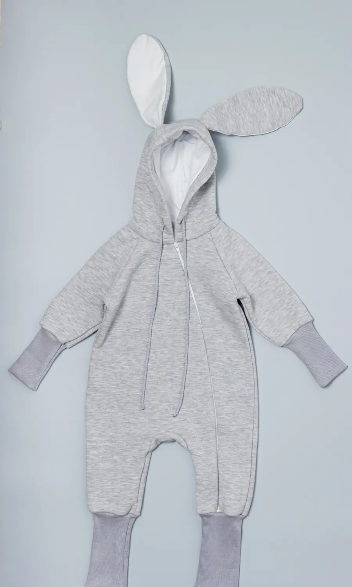
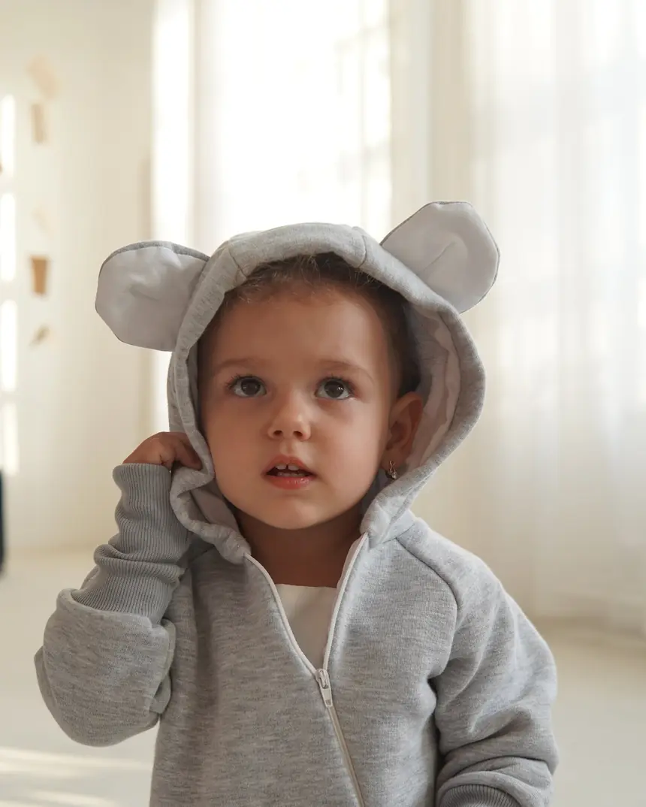
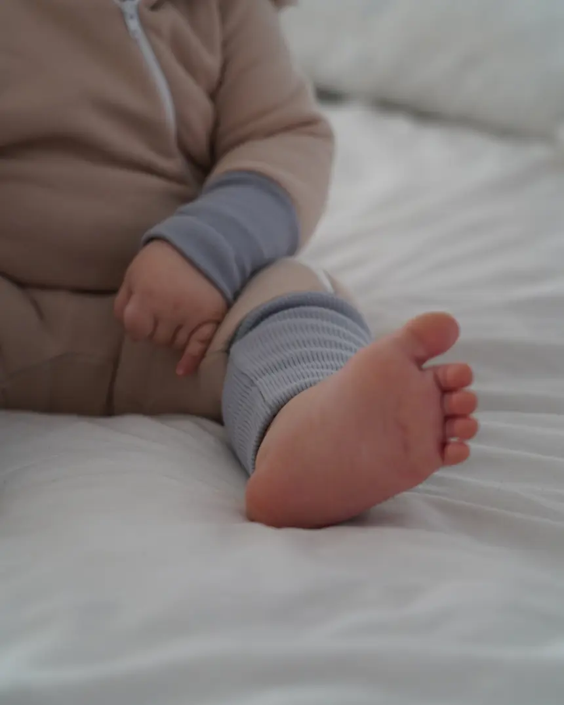
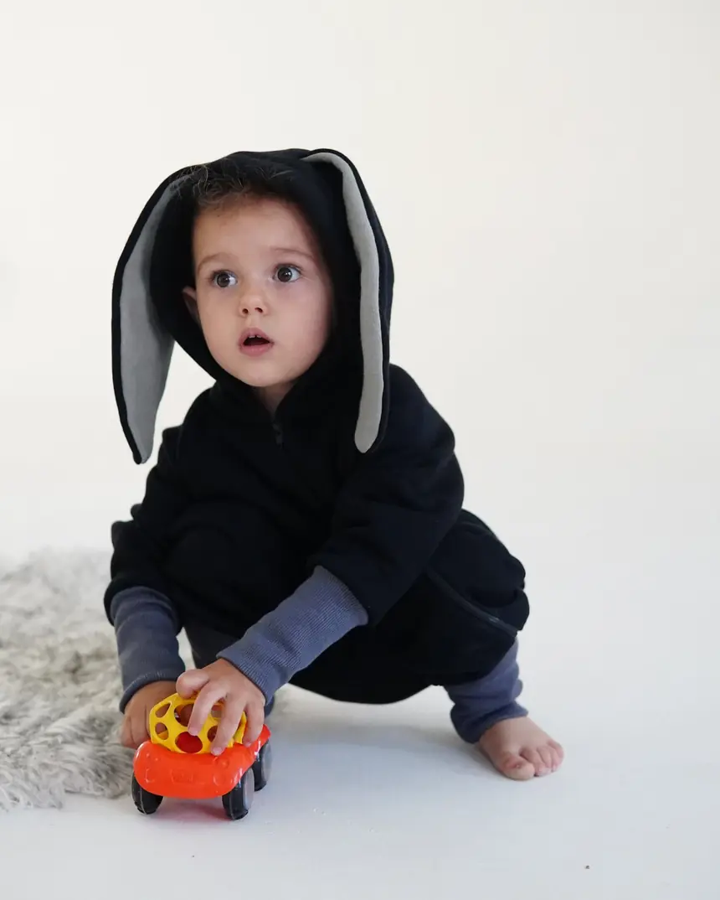

Teplákový overal s kapucí, oušky a dlouhými žebrovanými manžetami. Dokud je dítě malé, manžety ohrnete. Jak roste, rozložíte je a overal vydrží zhruba rok. Ušitý v Česku.
Teplákovina, kapuce podšitá jemným úpletem. Přesné složení doplníme. Perte na 30 °C naruby se zapnutým zipem, nesušte v sušičce.
Odesíláme do 2 pracovních dnů přes Zásilkovnu nebo PPL. Doprava zdarma od 2 500 Kč. Do 30 dní můžete overal vrátit nebo vyměnit za jinou velikost.
Rukávy i nohavice mají dlouhé žebrované manžety. Dokud je dítě malé, nosí je ohrnuté. Jak roste, manžety rozložíte a overal sedí dál.

 Ohrnuto
Rozloženo
Ohrnuto
Rozloženo
Táhněte a porovnejte
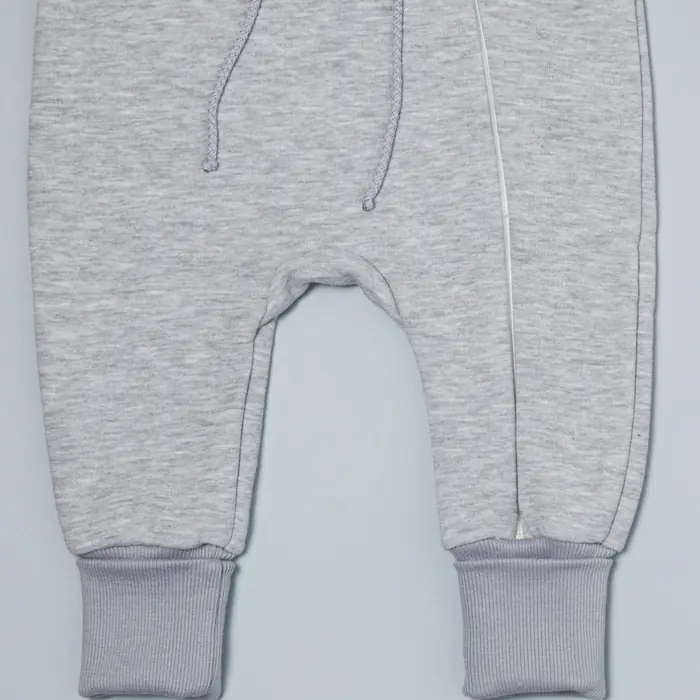
Šikmý zip jde přes celou délku, overal rozepnete jedním tahem a dítě nemusíte celé svlékat.
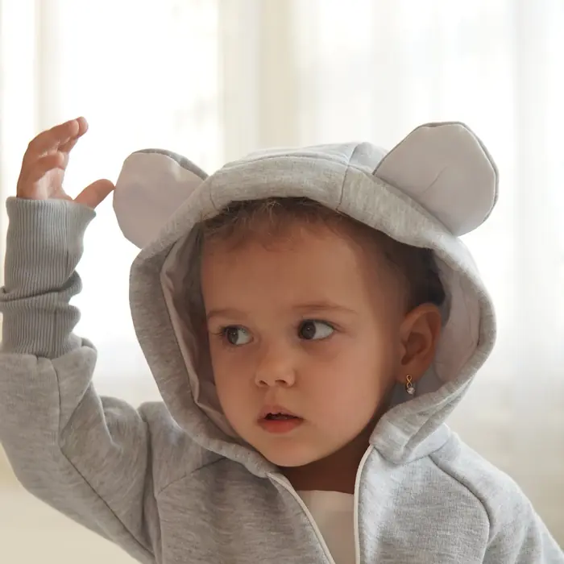
Podšitá jemným úpletem, drží na hlavě a ouška udělají radost každému, kdo se podívá.
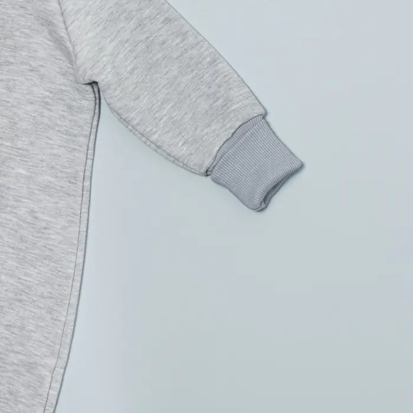
Pevný žebrovaný úplet. Ohrnete, když je dítě malé, a rozložíte, až povyroste.
Miminko za první rok vyroste zhruba o 25 cm. Běžné oblečení to řeší dalším nákupem, POIKKA delší manžetou.
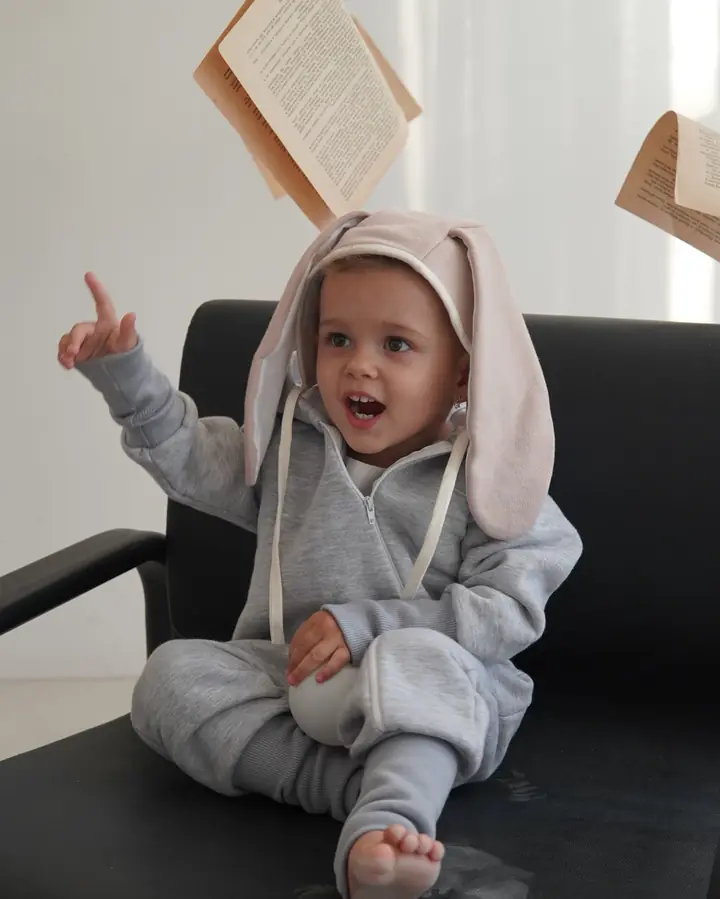
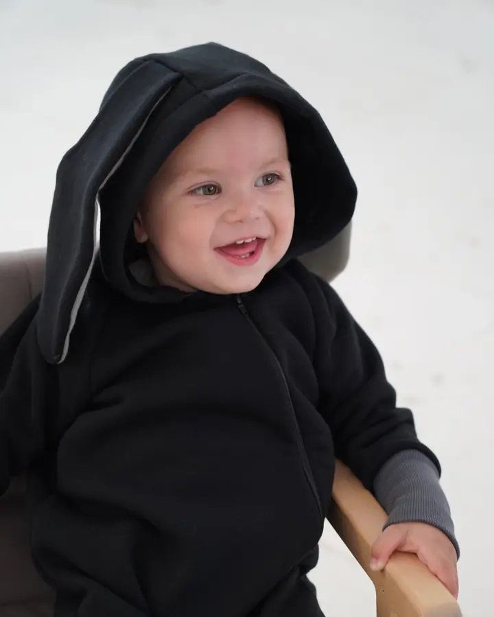

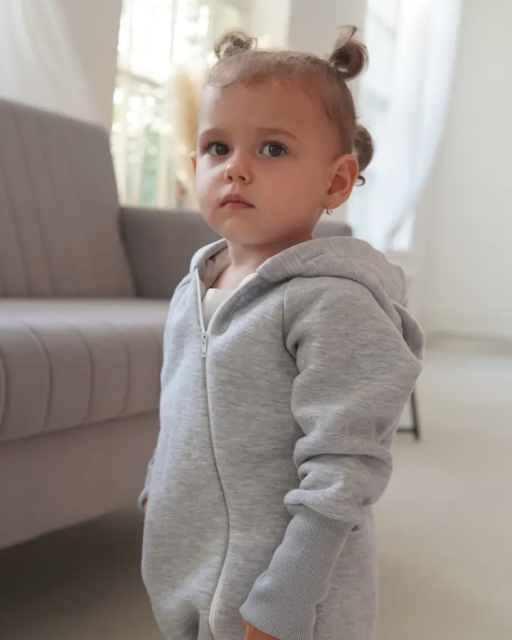

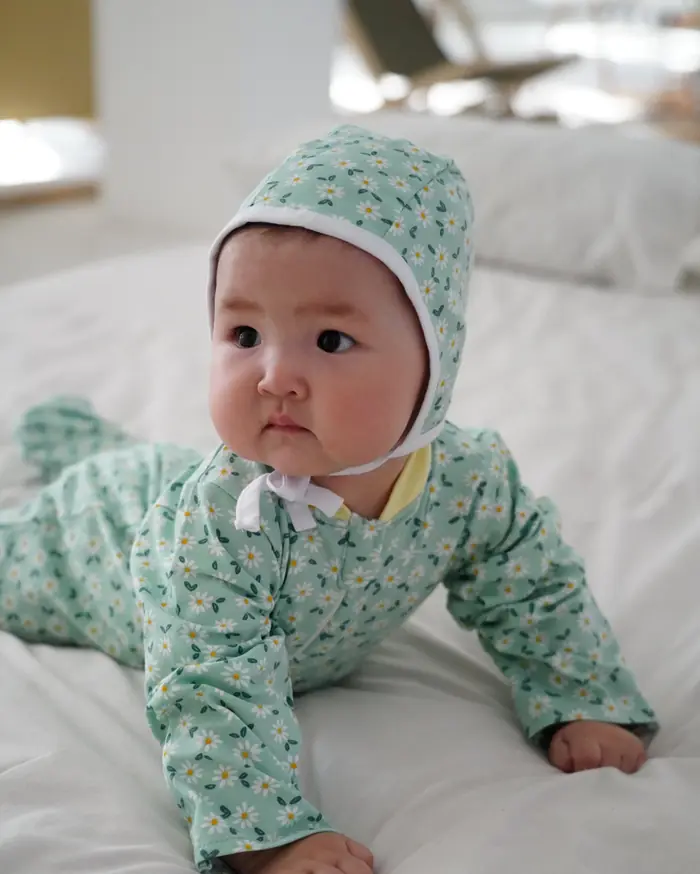
Dupačky s ťapkami a čepička ze stejné látky. Než miminko doroste do overalu.
Prohlédnout set„Nosíme od tří měsíců a pořád sedí. Manžety jsme rozložili teprve minulý týden.“
„Jednoduché, krásně ušité, bez nápisů. Ouška jsou roztomilá, ale ne přeslazená.“
„Zip přes celou nohavici je spása. Přebalování v noci bez svlékání.“
„Kvalita super, jen bych uvítala ještě jednu barvu. Velikost sedí podle tabulky.“
„Koupili jsme dva, pro bráchu a ségru. Vypadají spolu skvěle.“
„Látka je měkká a po praní pořád jako nová.“